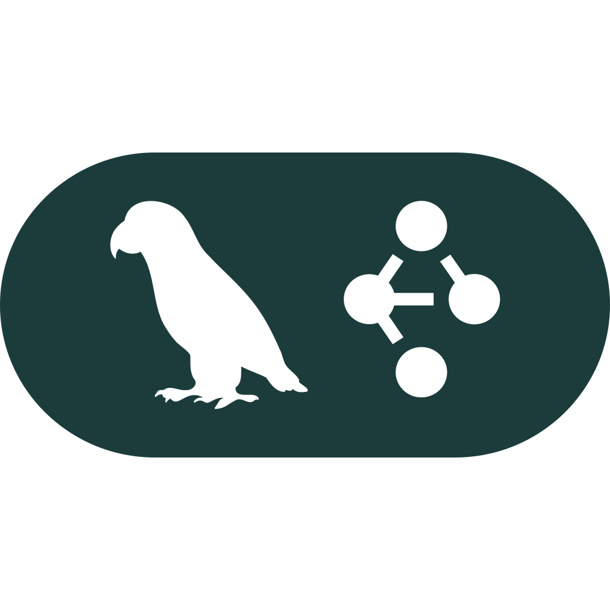
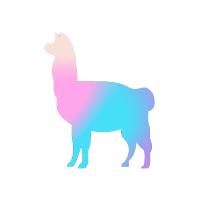

Skills & Technologies
LangChain

LangGraph
LlamaIndexRecent Computer Science graduate from HCMUT Honor Program, passionate about AI research and data-driven solutions. Specializing in Natural Language Processing, Agentic Workflows, and Machine Learning to develop innovative applications that address real-world challenges.
Hello! I'm Nhan Vo Ngoc Thanh (Nolan Vo), a recent graduate from the Honor Program in Computer Science at Ho Chi Minh City University of Technology with a GPA of 3.7/4.0. Currently working as an AI Engineer at FPT Software, I'm passionate about continual learning and leveraging AI to solve real-world problems.
My expertise spans Natural Language Processing, Agentic Workflows, Machine Learning, and Data Mining. I've published research on knowledge graph reasoning at IEEE Big Data Conference 2025 and have hands-on experience with LangChain, LangGraph, LlamaIndex, PyTorch, and various AI frameworks. I specialize in building RAG pipelines, agentic systems, and end-to-end ML solutions.
My objective is to leverage my skills in AI research and data-driven solutions to develop innovative applications that address real-world challenges, ultimately contributing to societal improvement and meaningful impact. I'm particularly interested in agentic workflows and advanced NLP applications.

LangGraph
LlamaIndexDeveloped an AI-enhanced reporting web application that queries and visualizes data in real time, enabling users to interact with dashboards through natural-language insights. Designed and implemented the workflow for a dedicated report agent with rule-based anomaly detection, optimized prompts for accurate insight generation, and collaborated with the engineering team to integrate the agent seamlessly.
Developed an AI-enhanced reporting web application that queries and visualizes data in real time, enabling users to interact with dashboards through natural-language insights. Designed and implemented the workflow for a dedicated report agent with rule-based anomaly detection, optimized prompts for accurate insight generation, and collaborated with the engineering team to integrate the agent seamlessly.
Developed "Chaos Age," a real-time strategy game in Clash of Clans style. Implemented A* pathfinding algorithm for troop movement, opponent matching logic, and target selection systems. Built the troop training system on the client side and the building/upgrading logic on the server, ensuring reliable battle result synchronization between client and server for data integrity.
View Showcase →Created email parsers to extract invoice and purchase order data, significantly reducing manual effort. Designed and implemented similarity search features for matching items between client-provided data and company inventory, leveraging LlamaParse for document processing and PostgreSQL for data management.
Developed modular components to process documents and queries with high efficiency using agentic workflows. Implemented a document memory module for context retention and utilized LangFuse for real-time monitoring and debugging. Built asynchronous execution capabilities with LangGraph and FastAPI for scalable performance.
Designed and evaluated Attentive-HINGE, an attention-based model that enhances link prediction for Vietnamese educational knowledge graphs. Led the research team in developing improved multi-hop question answering over complex knowledge graphs. Paper accepted at IEEE Big Data Conference 2025 (KGBigData Workshop).
View Paper →Developed a component of an Autonomous Driving project focusing on fully autonomous driving solutions, including lane detection and traffic light recognition in the Gazebo simulator before deployment to ROS for real-world implementation. Conducted data processing and model training with YOLOv5 to perform accurate traffic sign detection.
View on GitHub →Addressed weather forecasting using Machine Learning and Big Data tools (PySpark) to determine the feasibility of making valuable predictions of meteorological conditions based solely on previously seen meteorological data. Implemented ML models (Random Forest, MLP) to predict meteorological conditions from preprocessed weather measurement datasets.
View on GitHub →Vietnam National University, Ho Chi Minh City
Recognized with the prestigious Student of 5 Merits Award in December 2025, honoring excellence across academic achievement, ethics, physical fitness, community service, and cultural activities.
KGBigData Workshop at IEEE Big Data Conference
Published paper: "Enhancing Link Prediction with Attentive-HINGE: A Vietnamese Case Study in Educational Knowledge Graph" at IEEE Big Data 2025. Camera-ready submission accepted in December 2025.
Ho Chi Minh University of Technology
Awarded by Vietnam Electricity (EVN) in July 2025 for academic excellence and strong ethics, recognizing outstanding performance in computer science studies.
Ho Chi Minh University of Technology
Recognized as Outstanding Student for the academic year 2023-2024 in November 2024, demonstrating exceptional performance in the Computer Science Honor Program.
Ho Chi Minh University of Technology
Awarded merit-based scholarship in December 2023 for academic excellence, ranking in the top 10% of the Computer Science faculty at HCMUT.
Ho Chi Minh University of Technology
Recognized as Excellent Student for the academic year 2022-2023 in November 2023, demonstrating consistent high performance in academic coursework and research activities.
I'm always open to discussing new projects, creative ideas, or opportunities to be part of your vision. Feel free to reach out!